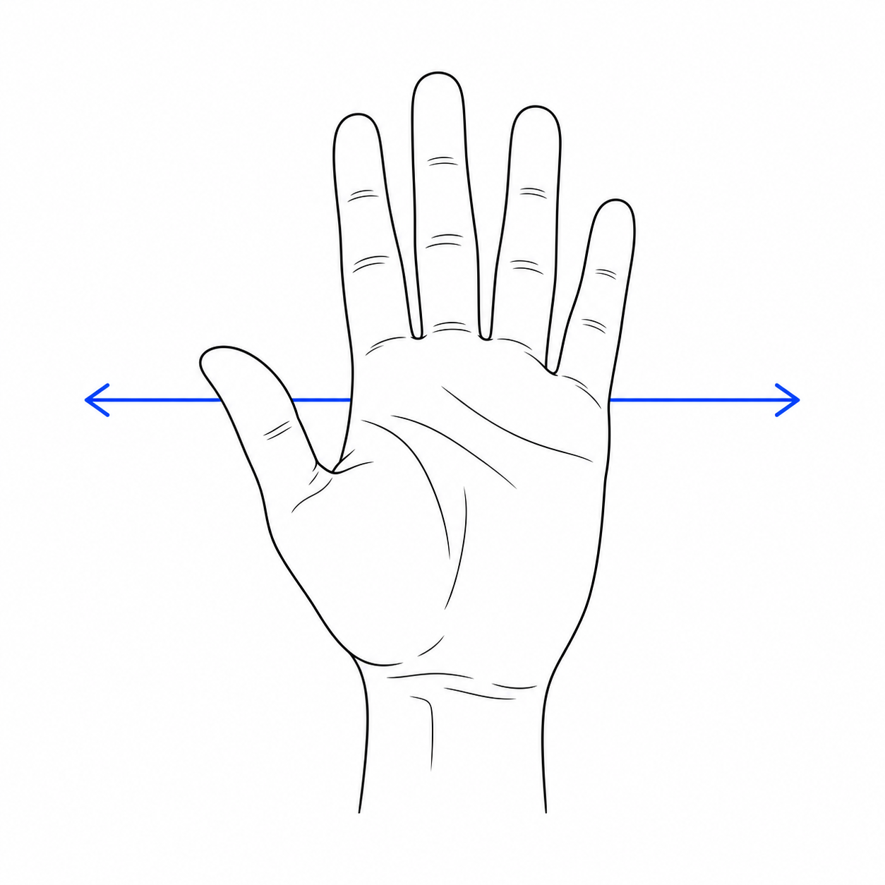
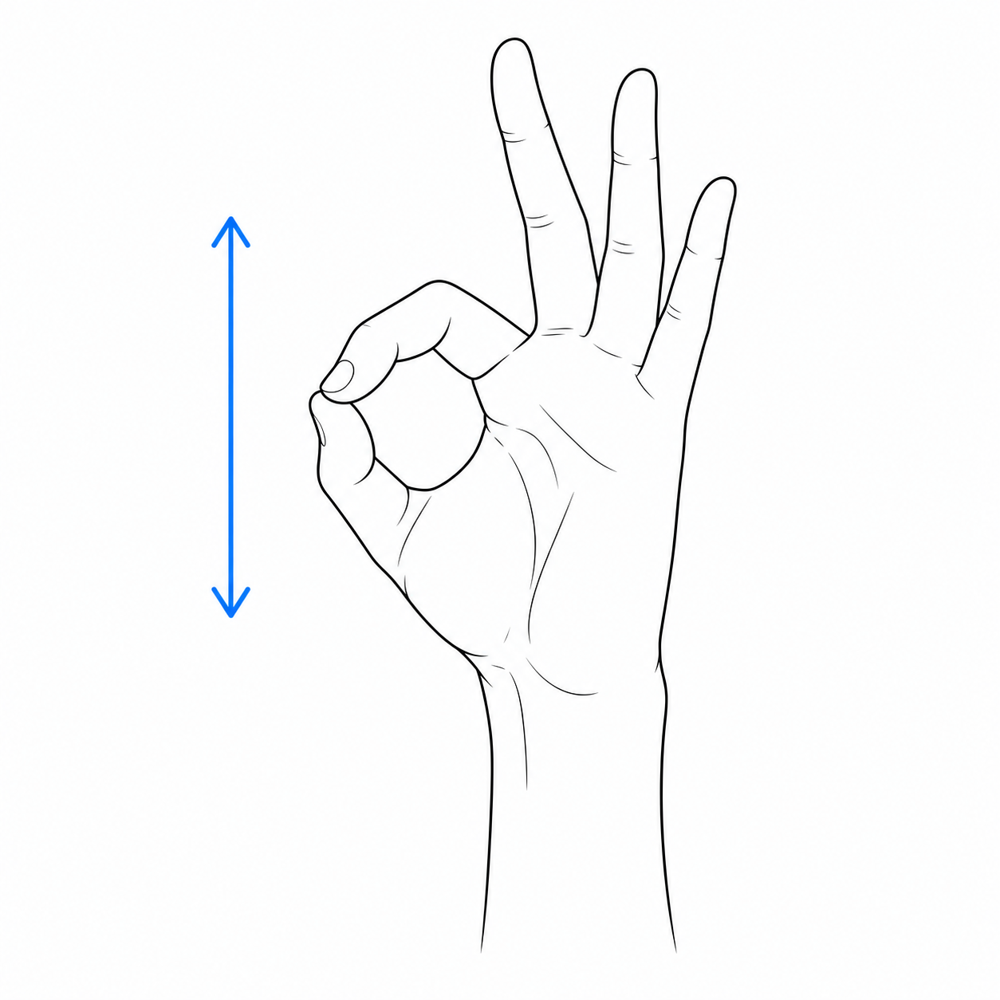
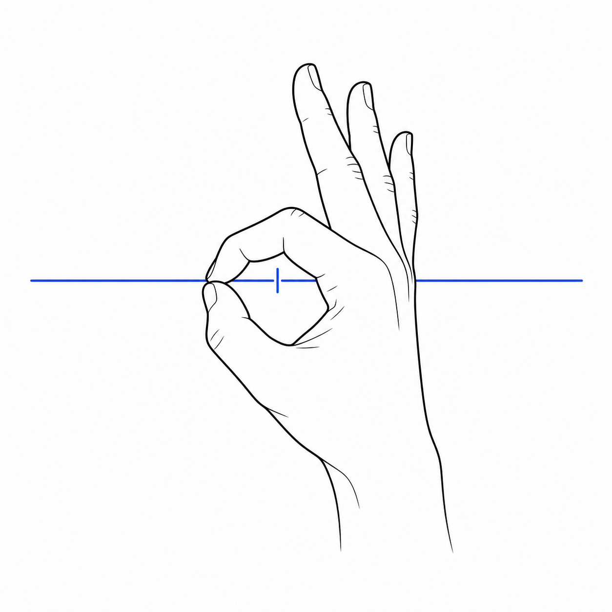
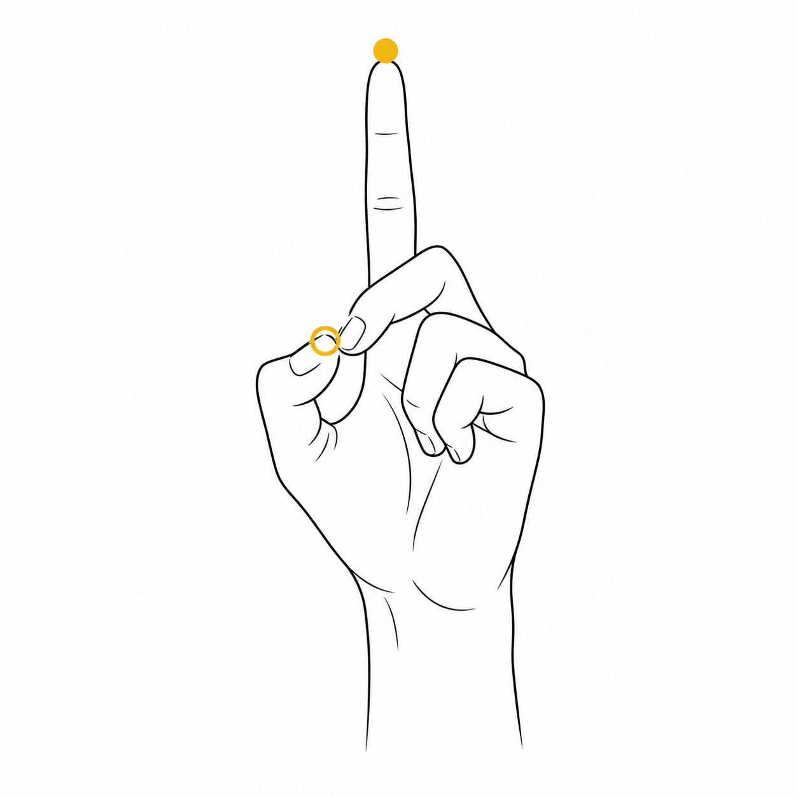

macOS 视觉手势控制
一边吃薯片，
一边畅快浏览。
不用担心弄脏键盘和触控板。
- 识别完全在本机完成
- Apple Silicon 与 Intel 通用
- 无需安装 Xcode、Node.js 或其他程序
手留给薯片，浏览交给手势。
它能做什么
不碰电脑，也能完成常用浏览操作
第一次使用
三步开始
安装包已经包含识别模型和运行环境，不会在启动后再下载一堆东西。
安装 App
打开 DMG，把“薯片手”拖到“Applications / 应用程序”。以后从程序坞、启动台或菜单栏的小手进入。
首次放行
免费开源版没有购买 Apple Developer 签名。首次若被拦截，请右键 App 选择“打开”；或到“隐私与安全性”点“仍要打开”。只需一次。
开启两项权限
允许“摄像头”和“辅助功能”，回到 App 点“开启手势控制”。摄像头负责看手，辅助功能负责把动作发送给当前窗口。
手势图解
先看姿态，再做动作
为了避免误操作，薯片手不会只看“手指靠得很近”。姿态和移动方向都要符合要求。

01
张掌翻页
五指自然张开，向右挥动向下翻页；向左挥动向上翻页。一次挥动只触发一次。
适合：网页、文档、时间线
02
OK 捏合滚动
拇指与食指尖接触，同时中指、无名指、小指保持张开。捏住后上下移动即可连续滚动，松开停止。
握拳不会被当成 OK 捏合
03
跨中线返回 / 前进
从屏幕左侧捏合，向右越过中线：返回。反方向从右侧越过中线：前进。白线发出蓝光时即可松手。
仅 Chrome、Safari、Edge 和夸克
04
食指悬停与点击
竖起食指即可移动黄色点；停在目标上后，让拇指与中指轻捏一次完成点击。控制点始终开启，不需要额外设置。
适合：YouTube 等支持鼠标悬停的网站目前只识别，不执行
V 手势、竖起拇指、握拳会显示实时状态，但不会点击网页或发送系统操作。这样可以先验证准确率，不拿你的页面做实验。
实时反馈
窗口小，但每个状态都有用
右手 · 已检测到手掌
- 单击右侧三道杠：收起到屏幕右边缘。
- 迷你窗口可上下移动；双击恢复默认位置。
- 双击展开窗口：暂停或恢复；暂停时圆点变红。
- 关闭完整骨架后，黄色控制点和跨中线闪光仍会显示。
遇到问题
先检查这五件事
辅助功能明明打开，App 仍显示未允许
完全退出薯片手，在“系统设置 → 隐私与安全性 → 辅助功能”里把“薯片手”关闭再打开。如果列表里有旧条目，删除旧条目后用“+”重新选择“应用程序”里的“薯片手.app”，再启动 App。不要重置其他应用的权限。
首次打开提示无法验证开发者
右键“薯片手.app”选择“打开”。若仍被阻止，到“系统设置 → 隐私与安全性”底部选择“仍要打开”。这是未购买 Apple 年费签名的开源版本所需的一次性确认。
看得见骨架，但没有任何操作
确认辅助功能为“已允许”，并先点“测试系统下翻”。测试有效但手势无效时，检查菜单中的“控制手”是否和你正在使用的左手或右手一致。
食指黄点有反应，但不点击
食指先停稳，再让拇指与中指尖轻轻接触。食指指针只在 Chrome、Safari、Edge 和夸克中发送鼠标移动与点击。
摄像头没有画面或识别不稳定
关闭正在占用摄像头的其他 App，保证手掌有足够光线、完整进入画面。需要校准时再打开“显示摄像头校准窗口”，日常不必一直显示。
隐私与完整性
摄像头只在你的 Mac 上工作
视频帧只用于实时识别，不保存、不上传。MediaPipe 运行时、WASM 和模型全部包含在 App 中；本机临时服务只监听 127.0.0.1。
版本：ChipHand 1.0.1 · macOS 14 或更高版本 · MIT 开源许可